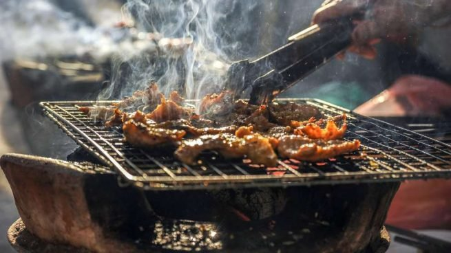

Asado Argentino

Descripción
Básicamente, se trata de colocar diversos trozos de carne expuestos al calor del fuego. En la práctica, existen diferentes técnicas para cocinar bajo este formato.
Los gauchos que ocupaban las llanuras de Argentina se especializaron en preparar carnes en asadores de hierro.
Ingredientes
- 1 y 1/2 kilo de asado de tira
- Sal y pimienta a gusto
Pasos
- Encender el fuego para lograr una buena cantidad de brasas, puede ser tanto con carbón como leña.
- Colocar una buena capa de brasas debajo de la parrilla y calentar los fierros hasta que adquieran temperatura.
- Salar la carne, al tratarse de un corte de pequeño se puede usar sal fina, sin embargo, siempre lo aconsejable es utilizar sal parrillera, la pimienta es a gusto de cada asador.
- Aproximadamente, se calcula media hora del lado de los huesos, hasta observar que comienzan a brotar pequeñas gotas de sangre del lado de la carne, es un buen momento para dar vuelta la tira.
Una vez esté del lado de la carne solo dorar la misma para que quede crujiente y con color, bastará con unos diez minutos como mucho y estará listo para salir del fuego y reposar unos minutos.
- Servir y acompañar con papas fritas.